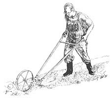
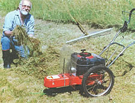
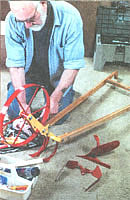
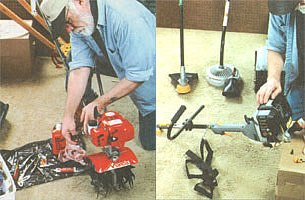

WE TEST THE BEST, PART I
The most innovative tools for home, lawn, and garden.
Every few years, MOTHER likes to spot the latest earth-friendly trends in home gardening and grounds-keeping, then survey relevant new tools, products, and services, to see which might be commended to readers.
As for trends this spring of 1998 - less than two years from a new century - we are gratified to note the recent growth in popularity of both purchased and home-grown organic foods. These wholesome edibles are raised the natural way, without toxic pest controls, by using compost and mulches rather than chemical fertilizers that degrade earth and that are mostly derived from our planet's finite petroleum reserves.
We are even more pleased. to note that these new, more Natural Home-planting schemes often replace wasteful expanses of lawn that are a holdover from hardworking, egalitarian America's uncharacteristic penchant for mimicking the estate grounds of Europe's idle, rich, landed gentry.
As an added benefit, householders who replace their lawns with native-life meadow or garden can recycle MOTHER'S least-favorite homeowner machine: the noisy, smoke-belching rotary-blade lawn mower. These savage devices persist because, even though pricey and more-safety-conscious models are available, the average backyard specimen is sold for about $100 - a fraction of the cost of the more effective and much safer powered reel-mower. The inefficient throw-away engines of these cheap mowers pollute our air and make a racket. Their 2,500 rpm revolving blades can eject rocks at virtually bullet velocity. Their tiny wheels and a low pancake shape make them tend to flip or slide on uneven terrain and hills. It is too easy to slip a foot under one on slick, wet grass. Operated in the typical, macho, American way - without heeding, or so much as reading, safety directions, and bypassing inconvenient safe-operating controls - rotaries are indirectly responsible every year for thousands of limb-maiming injuries. When operated around small children, they're even more dangerous.
To give these mowers a fair shake, we purchased an example of the industry's best effort at producing a safe rotary. On sale at a major chain department store, it was made by an anonymous member of the evershrinking number of North American lawn-equipment makers, and its safety and convenience features brought the cost to better than four times the price of the basic El Cheapo rotary. For the added bucks, we got a cast-metal housing, a clean-burning, quiet, and powerful Tecumseh engine, self-propelled front wheels, high rear wheels, the option of mulching or bagging the clippings, and an electric key-start. The machine rolled out of the box ready to raise the handle, add oil, gas up, and go. Before going out to mow, we gave it the preventive-maintenance treatment described in more detail below.
On flat and level ground, the mower proved to cut short grass well in both the mulch and bag modes, and the powered wheels and electric start reduced the effort needed to a minimum, though turning the wide, heavy deck was difficult in close quarters. Fresh grass cuttings mat down into an impenetrable sheet-mulch that deters weeds and attracts fishing worms to the surface all summer. It then biodegrades into soil nutrients over winter.
This type of mower is as safe and quiet as man can make it. With a wire-bale deadman ignition switch, automatic blade clutch, and key-start on the handle, an operator never has the opportunity to get a hand near the revolving blades. A heavy rubber skirt at the rear of the housing keeps feet from sliding under. The muffler on the efficient, clean-burning, four-cycle engine is remarkably effective; the engine purrs.
A broad, four-point stance and high rear wheels let the mower sail on flat lawns and it navigates fairly well over the many bumps, ruts, pits, and ditches that kids, pets, livestock, tractor, cordwood truck, and garden equipment excavate in any proper country backyard. Cutting short grass was fine, but in the bagging mode, the discharge opening clogged up in half high, wet grass, threatening to choke the engine down. Cutting six-inch-high grass in mulching mode, it simply clogged and quit. Fortunately, the safety features force an operator to stop the engine and halt the blade before trying to clear the clog, and the electric key makes a restart so easy that not even the most resolute King of the Hill should be tempted to try to defeat the safety features.
In sum, this safest and most advanced of homeowner rotary mowers is suitable only for flat, level lawns free of rocks and sticks and kept golf-green-short from first greenup in spring to hard frost in the fall. Of course, that's what they are designed for: to manicure nice, big, land-wasting suburban lawns.
They have little place on a real country homestead; they certainly provide no function that justifies their cost. Know anyone who wants an overpriced mower?
A small lawn can be kept in trim most safely and cheaply with an old-fashioned hand-propelled reel mower. Being manufactured again, new versions of the old, prerotary designs are being sold today by the mail-order garden-tool merchants and homestead outfitters, and by a few seed catalogs. Prices range from about $100 - the cost of a basic rotary - to twice that. On short grass, a sharp and properly-adjusted reel-mower hums sweetly as it works. You'll hum sweetly too - but only so long as the reel is sharp and properly aligned to a well-honed cutter bar.
Don't try to sharpen it yourself. You'll ruin the reel trying to sharpen it with a flat file and you'll cut your fingers trying to hold a well-oiled reel in place with one hand while you file with the other. You might also damage the cutting edges or bend the curved blades trying to jam the reel in place with a stick or whatever is handy. Before you get a hand-push reel mower, be sure there's an old-timer in town with a Belsaw and the skill to sharpen both the straight cutter bar and the compound curves of a mower reel.
Power-mowing and much more - without the need to sharpen anything - can be performed most easily and safely with MOTHER's nomination for the most innovative country-homeplace land-care machine of the late twentieth century: the wheeled trimmer-mower. It is best exemplified by the DR, popularized by Country Home Products of Vergennes, Vermont, and closely copied by several other firms who knew a good idea when they saw one.
With these machines, a twenty-inch or so swath of vegetation is cut by four lengths of one-eighth-inch thick nylon cord that revolve parallel to the ground at high speed. The machine is powered by a modern, quiet, low-emissions four-cycle gasoline engine mounted on a sturdy chassis that is supported by a pair of sixteen-inch-high wheels. They operate on the same principle as the hand-carried string trimmer - a little, shrieking, two-cycle engine on a pole that whirls a length of fishing line to snip off grass around trees and foundations that a mower can't reach. Yet the motorized, wheeled trimmer-mower is in fact an entirely different class of tool, having more in common with a heavy-duty, flexible, flail-type brush-cutter.
We purchased a top-of-the-line, electric-starting, six-horsepower DR Trimmer-Mower. We bought it at full price and anonymously - as is the case with all products cited in this article and most others reviewed by MOTHER. We gave it hard use in several natural landscaping locales over a variety of terrain and weather conditions during 1997. It proved easy to operate, effective, and - best of all - safe, in home-mowing conditions ranging from a small, closely-trimmed front lawn, to meadows, woodland paths, clearings, and the moderately dense mixed meadow-brush on the rutted and hilly "back forty."
Though not promoted as a fine-lawn mower, the DR proved able to trim our country-lawn grass as neatly and evenly as any rotary - though not to the perfect putting surface of a reel-mower. And, unlike any kind of lawn mower, it can trim right up to tree trunks or building foundations, under fences, and close to tender ornamentals or vegetable plants.
Unlike any reel or rotary we've used, it handily cut waist-high grass and meadow weeds evenly and close to the ground, wind-rowing the cuttings into a narrow row to the right (the already-cut side) of the mowed swath. With another quick pass, we were able to kick the cuttings over as often as was needed to dry and cure them-even if rained on. This let us make hay that would keep well, on a limited, hand-work, homestead basis. Small scale hay-making is possible otherwise only with a hand-scythe or a powered sicklebar cutter, plus turning rakes and pitchforks. Using these tools takes a terrible toll on modern spines and back muscles, because they are not used to preindustrial hay-mowing techniques.
To date, no wheeled trimmers are self-propelled; they must be pushed. They are not feather-light machines. However, the DR's high wheels, good balance, ability to pivot in its own length, as well as its unique ability to cant the deck over its axle and wheels, permitted us to mow uneven terrain and hills fairly easily. It did this without the danger of the sliding or flipping posed by rotary mowers and without the dreadfully hazardous - but little-publicized - tippiness of self-propelled, heavy-duty walking or riding tractors with rotary-mower attachments.
To our countryfied standards, the trimmer-mower can do anything a conventional lawn mower and stringer combo can. It also does a great deal that the combo can't. The trimmer-mower will cut herbaceous plants and tender young tree sprouts, but draws the line at woody stems. In cutting down pasture, I carry a hand-pruner to nip off the more mature tree seedlings and the occasional woody old goldenrod stem.
For woodland paths, badly-overgrown roadsides, and pasture margins where encroaching stands of popple or sumac have gotten a root-hold, we use the thirty-year-old Gravely L with the brush-hog-type, thirty-inch rotary mower attachment and its ten-pound blade. It is still being made to fit today's Gravely walking tractors. The DR answer to heavy undergrowth is their Field and Brush Mower, a self-propelled workhorse with a fourteen horsepower engine and heavy mowing blade. Either of these mechanical brutes - and similar heavy-duty mowers from other walking tractor and tiller-makers - will whack off any young tree they can bull down. Anything they can't cut down calls for a chain saw.
If you don't own a conventional hand-held string-trimmer, you've surely seen and heard them. They feature a ground level string head revolving at the bottom of a steel tube handle that contains a flexible shaft powered by a little two-cycle engine that burns a mix of oil and gasoline. It runs at high rpms, belches oily smoke, and produces a high-pitched shriek just a few inches from the operator's ear. They're ghastly little machines. Most of them are now illegal in California and other locales concerned with the environment.
A power head on a long shaft is an excellent idea - if it carries a quiet, clean-burning engine and offers a variety of attachments that benefit from being handheld at the end of a long shaft, such as a tree-trimmer or snow-remover.
We discovered just such a machine being made, mostly in America, by Ryobi Outdoor Products of Chandler, Arizona. Their Trimmer Plus features a small but powerful four-cycle engine with a separate oil sump and low-pitched exhaust. It runs cleanly and quietly enough to satisfy all clean-air regulations. This unique product has been available since 1994. A new commercial line will be introduced in 1998, but hasn't been as widely publicized as it deserves. We discovered factory-reconditioned units being sold at a discount at our favorite tools discounter, Harbor Freight, of San Francisco. We ordered the reconditioned power head and a string-trimmer attachment for $100 and change. At Sears, we found a $30 blower attachment to get fall leaves to the compost pile and blow dry snow off the walk We also sent for a $109 snow blower, to remove dense snow from small areas, direct from Ryobi. A rotary-disk garden cultivator, hedge trimmer, and other accessories are available at a fraction of the cost of units with dedicated engines.
We can't think of a better suite of outdoor power tools for someone living on a small, mobile-home-sized property - with too much lawn and garden to do by hand, but too little to justify a full-sized mower, tiller, and snow blower. We found that the Ryobi four-cycle engine starts easily, runs economically with a lean exhaust, and produces a purr rather than a two-cycle yowl. The attachments perform more capably than their small size would suggest, and the whole rig can be hung in a closet. Be sure the fuel is emptied back into your gas can and the engine is run dry before storing indoors.
The only feature that concerned us is the most common weak point of garden tractors, tillers, and other home-grade power heads with multiple power-driven attachments: the connector that joins the engine-drive and accessories. Ryobi's split drive shaft is a long one. It makes the connection by inserting a two-inch-long, square-edged, hardened-steel jack on the power end into a mirror-image sleeve on the accessory shaft. If the parts are kept lightly greased and the connection is made as instructed, with an extra 90° twist, the joint will be tight and strong. They have redesigned, simplified, and strengthened the cylindrical clamp that surrounds and secures the joint around its outside, where the outer shaft-housings connect. If the attachments are affixed according to the instructions, the tools should serve for many years. If you try to rush, and the outer housings are misaligned or the power-shaft jack is only partly inserted into the accessory-shaft socket, your machine, at best, could end up in the factory reconditioning shop. You'll have your money back, but you'll be out another modern example of appropriate technology.
As with the other machines, we went over the Ryobi's chrome, painted, and nonvinyl plastic surfaces with Nu Finish. We lightly oiled and greased the surfaces of the few exposed hinge-pins and cables. Other than keeping the split-shaft connection well greased, we wouldn't suggest lubricating the power shaft or gearing any more thoroughly or often than the instructions indicate.
When we developed a need for a small power-cultivator and tiller, we considered ordering the rotary-cultivator for the Ryobi. We finally questioned whether a four-foot-long, quarter-inch, flexible power cable should be asked to grind away at our rocky soil for hours on end.
We don't doubt that the Ryobi cultivator can do as promised: cultivate already-prepared soil. But, unless we wanted to do a great deal of hand-digging every year, we needed a real mini-tiller to make soil from sod in the many niche-garden vegetable beds we have, scattered among the rocks, ornamentals, and tree roots.
You've seen ads for the Mantis: a pair of chrome handles on a small engine located low to the ground that powers a set of spiky disk tines with a short, robust drive system. It is so light that the ads show it being carried by a petite lady gardener.
Like the DR, you can get a video of the machine and its accessories in action by calling a toll-free number (see Sources). Prices are similar to mail order and lower than you might expect. Low enough, in fact, to keep hundreds of thousands selling; they are perfect for tending narrow flower-borders and the small vegetable-plots that are all that many people have time to tend.
Even more convincing than the video is the machine itself. It assembles in minutes. It needs a mix of gas and oil for a two-cycle engine that is clean enough to satisfy even the strict California environmental regulations. It starts easily, is quieter than most two-cycles, and will eat up anything you feed it - if you give it time to chew. Because it is light enough to carry around easily, and featherweight when tilling, the Mantis is an ideal compromise between a weeding hoe and a big $2,000 rotary tiller and power-composter.
We tested it, John Henry-like, against our favorite hand tools. With a minimum of guidance, the Mantis will convert lawn into fine, loamy garden soil in less time than it takes to dig and chop finely by hand. It will do this with substantially less sweat and fewer blisters and bug bites. It won't cut through thick tree roots or extract big rocks, but neither will any garden machine short of a Farmall H with a subsoiler or our thirty-year-old Gravely L with its seven horsepower, quarter-of-a-Model-A engine and rotary plow. But the Farmall is a full-sized farm tractor, and the Gravely and plow are a shoulder-wrenching definition of overkill on anything smaller than a quarter-acre garden.
The Mantis works best when worked gently backwards, against the forward momentum of its tiller blades. It is most effective milling up already prepared soil to two-inch to three-inch depths, but given time, can get down a foot or more into fresh sod - deeper than any full-size rotary tiller. We applauded the Mantis in an earlier article, so we will merely add that this is one tiller that anyone really can operate with just one hand.
As with the DR, there are other makes of small tiller-cultivators and most of them function well. Some are copies of the Mantis design, and some have been around for decades - far longer than Mantis itself. We hope to test a few in issues to come, but we think we owe our respect to the little Pennsylvania mail-order firm that had the gumption to invest in the engineering to produce a superior product and that had the marketing vision to make us aware of the usefulness of a mini-tiller in the first place.
If you do have a garden that can be measured in fractional acres, you are running a de facto truck garden and will be cultivating more soil than a hoe or a Mantis can handle.
To break ground you'll surely want a small tractor or big tiller. But for less power-intensive small farming chores, we are pleased to note the reappearance of hand-pushed wheel hoes. Designed originally in the horse-farming days, they were sized to cultivate plots that were too big for hand-hoeing and too small or closely-planted to warrant harnessing the horse and setting up the cultivator.
The wheel hoe is patterned on the old-time horse-drawn cultivator. In some places a pony, a wether goat, or even a large dog is single-tree harnessed to the frame and trained to ease the work load. The tool features a pair of plow-handles leading down to a mini-draw push bar, to which you can attach a small moldboard plow, disks, or arrays of several kinds of cultivators: hilling plows, spades, spikes, hooks and more. A wheel - either a yard-high bicycle-spoked wheel (in the high-wheeled Kentucky design), or a six-inch to eighteen-inch diameter wheel with iron rim and spokes, or a solid-steel rubber-tired wheel (in the original Planet Junior low-wheel pattern) - is out in front of the tools and hung to keep the frame just off the soil while the tools bite as deep as you like.
Without the help of a beast, you adjust the tools on the bar to plow or disk one or two furrows or to cultivate between as many rows as possible. You try to accomplish, in a single pass, as much as is reasonable with your own muscles. In most soils, you must dig the tools) in and roll the wheel hoe forward, then pull it back on the wheel and push forward again as far as you can manage. An acre or two of this constant back-and-forth labor does build up your back, shoulders, and arms.
In light soil, or by taking shallow passes, you can keep going forward fairly steadily. You'll resort only occasionally to short back and forth agitation. A wheel hoe is ideal for light weeding with sweeps; it has rectangular or right-angled, knife-like blades that are set to run just under the soil surface. Some years back, we were blessed with a reasonably flat two-acre field of rich organic loam that had lain fallow for twenty-five years. Once it was plowed, disked, and well-rototilled, I used an original Planet Junior low-wheeler and sweeps to hand-cultivate - three to five times, till weeds were shaded out - a three-year rotation of corn, field peas, and beans, and rye or buckwheat. I planted the larger seed with an old Planet Junior seed drill. And even farther in the past, I inherited an even older high-wheel hoe with three curved, fishhook crook-tines rusted for all eternity into a triangular formation on the tool bar. It squeaked and wobbled on its worn iron axle, but managed to scratch out a decent foot-wide path between rows in the field corn. It was faster and better than hand-hoeing but not by much. The tall wheel tended to lever up off the ground and defeat its purpose by burying the tools if I had to push hard on the handles, whereas a low-wheeler helps support the tools and move them along in the row if a hard push is required. I hear that this has something to do with the fulcrum of leverage, angle of moment, and point of effort of the high-wheeler being well out in front of the tools, while the low-wheeler's is down low where it belongs. I didn't do well enough in physics to explain it any better than that.
You'll find one or another wheel hoe, as well as new, original-design Planet junior seed drills, listed in the homesteading and garden tools catalogs. There is also a superior quality low-wheel design made of stainless steel by the Swiss firm REAL (Ray'AL), which also makes a line of premium-grade hand tools that are cited in the second part of this article. Sold in several seed and tools catalogs, it features one or two wheels and oscillating stirrup hoes, as well as the usual assortment of cultivators. The Real is a lovely machine offering a high-tech interpretation of an old-fashioned concept. It runs on ball bearings and costs well over $200.
However, out of a preference for older technology, we opted for the Planet Junior. It has solid-iron wheels with no bearings at all; the axle turns inside a nylon sleeve. Its tool bar and implements of cast iron and tool steel are painted garish red and yellow; the handles are made of American ash or hickory. It costs even more than the Real. It is made by Denman & Company of Placentia, California. It can be purchased through Lehman's.
This crudely-cast and remarkably heavy eighteenth-century device is not assembled. That's for precision things like Swiss watches and wheel hoes. The Planet Junior is bolted together with plenty of axle grease on the fasteners where implements fasten to the tool bar. Then the whole thing is oiled against rust - even if it does get coated all over with greasy dust. Once the nylon sleeve-bushing wears out, we'll have to pour a new bearing from Babbit metal, or hard wheel-bearing grease will be worked into cotton that will be packed all around the wheel axle and held in place with a pair of washers. The bearing will have to be renewed once or twice during the year.
This is the sort of tool that old-time farmers left at the end of the last row to sit outside for the winter, only to hitch up the next spring, turn around, and work back in the other direction. With an annual greasing, it was sturdy enough to last through a lifetime of rain and snow - weather be damned!
|
 Appropriate technology at its finest: the low-wheel cultivator is a fine upper-body workout machine |
 Putting our trimmer-mower through its paces |
 Bolting the three duck- foot cultivators to the Planet Junior low-wheel cultivator |
|
 Left: taping up electrical connections on the Mantis. Right: adding oil to the Ryobi's four-cycle engine. |
|
|